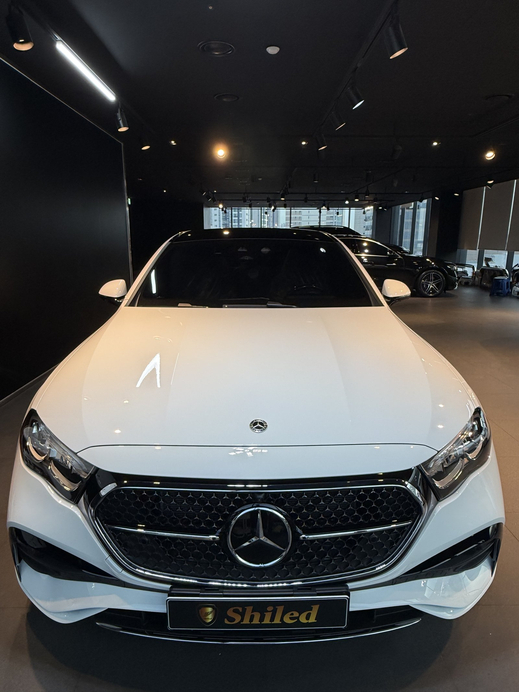
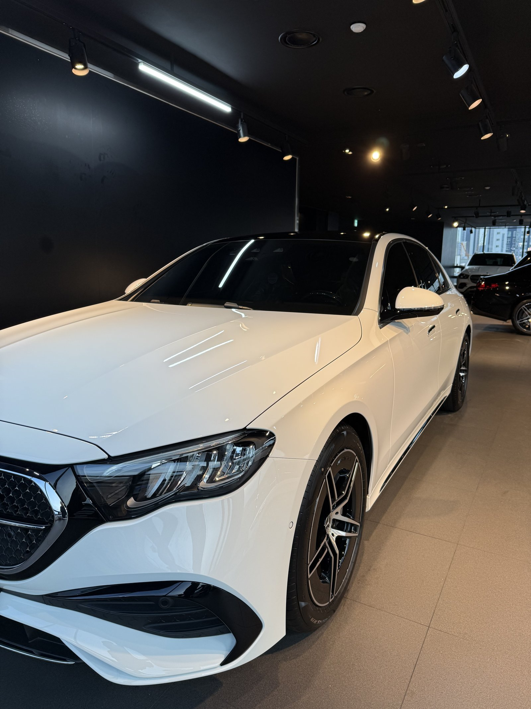
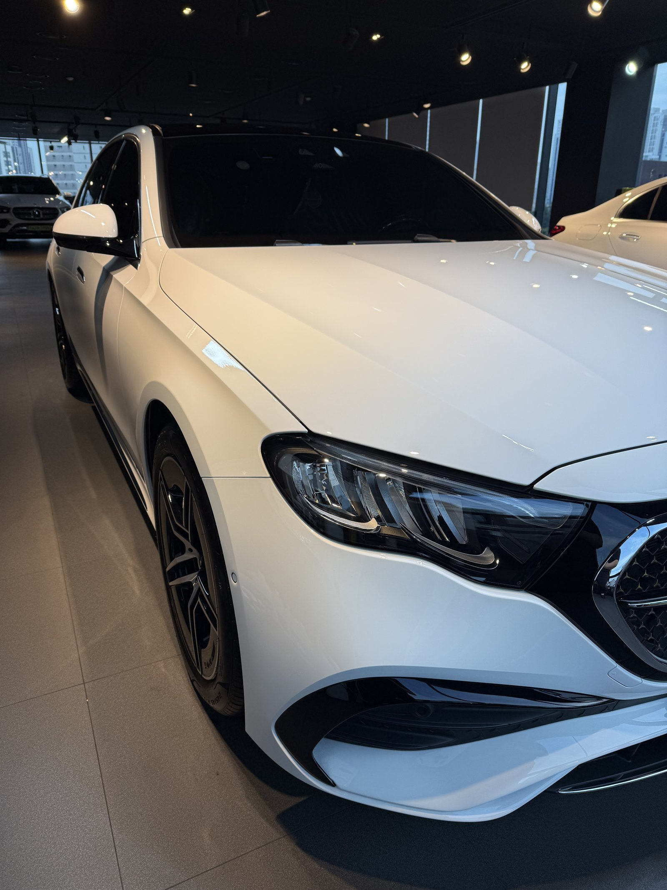
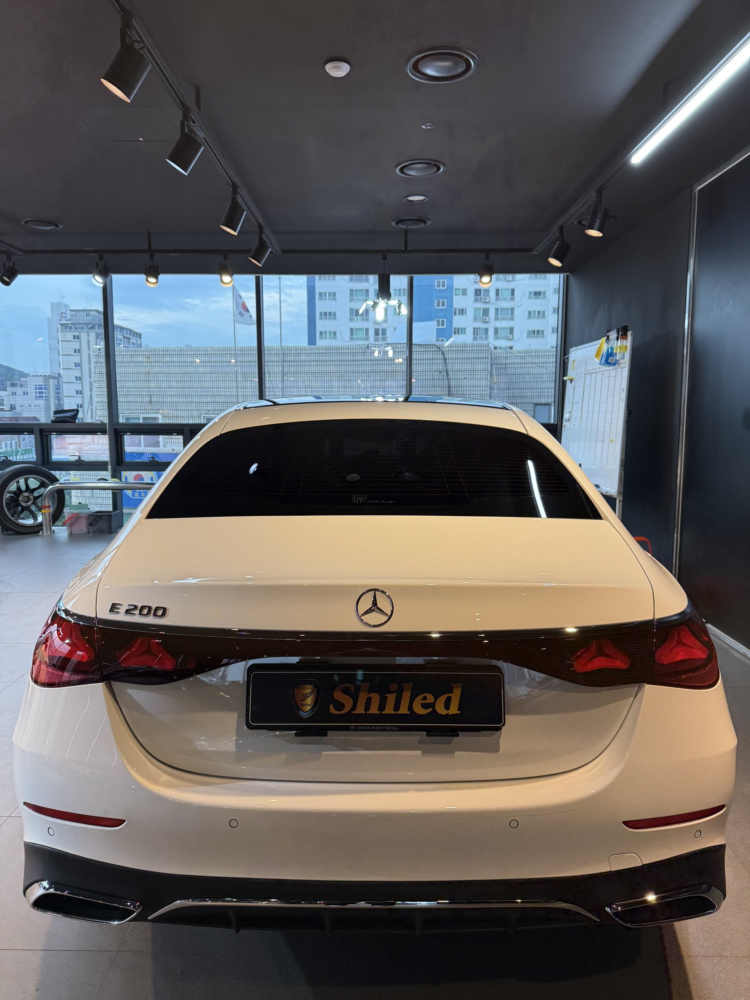
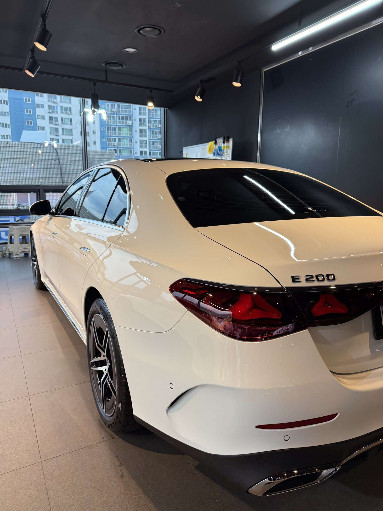
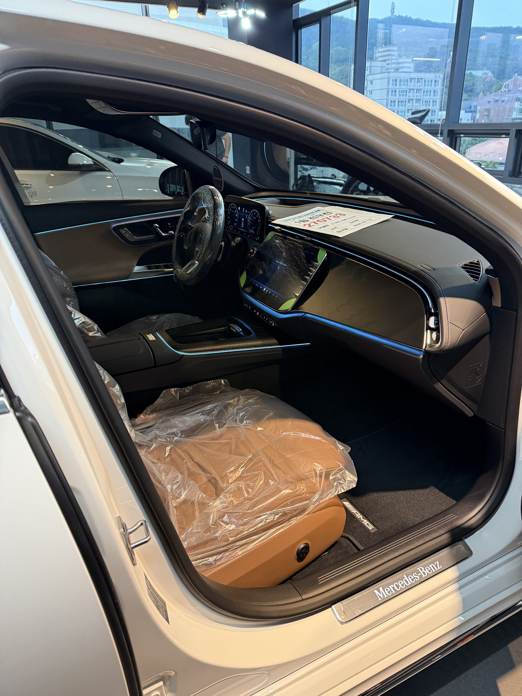
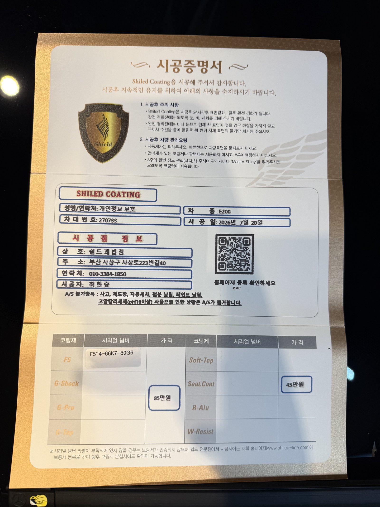

벤츠 E200 백색입니다. 아직 출고 전, 새 차입니다.
부산에서 벤츠 신차가 들어오면 저희가 자주 맡는 코스가 있습니다. 바로 부산 유리막코팅, 출고 전 시공입니다.
이 차는 F5 유리막코팅으로 진행했습니다. 백색 신차에 왜 F5를 올렸는지부터 정리하겠습니다.

새 차인데 왜 출고 전에 코팅을 하나
도장면이 가장 깨끗할 때 올리는 코팅이 가장 오래갑니다.
출고 후에는 운행과 세차로 미세한 잔기스와 오염이 쌓이기 시작합니다. 그게 쌓이기 전, 신차 상태 그대로일 때 코팅막을 입혀두는 겁니다. 부산에서 벤츠 신차 출고 전 코팅을 문의하시는 분들이 많은 이유도 여기에 있습니다.

백색 신차에 왜 F5인가
F5는 색감 깊이를 끌어올려 글로시함을 극대화하는 코팅입니다.
백색은 자칫 밋밋하고 플랫하게 보이기 쉬운 색입니다. 채도와 광택이 낮으면 하얗기만 할 뿐 입체감이 살지 않습니다. 여기에 F5를 올리면 표면에 맺히는 빛이 또렷해지면서, 맑고 화사한 느낌이 도드라집니다. 위 사진에서 보닛 위로 조명이 선명하게 맺히는 게 그 증거입니다. 코팅제는 대표가 화학공학 전공으로 직접 개발·제조한 제품입니다.

기술자의 팁
신차라고 바로 코팅을 올리지 않습니다. 운송·보관 중 묻은 미세 오염을 디테일링 세차와 탈지로 걷어낸 뒤에 올립니다. 백색은 오염이 상대적으로 도드라져 보이는 색이라 전처리를 더 꼼꼼히 봅니다. 깨끗한 바탕 위에 올려야 코팅이 제대로 밀착합니다.


실내 시트코팅도 함께 진행했습니다
이번 차량은 외부 F5코팅과 함께 실내 시트코팅도 같이 맡았습니다.
시공증명서에도 F5와 시트코팅(Seat.Coat) 두 항목이 함께 기재돼 있습니다. 출고 전 신차는 외부 도장뿐 아니라 실내 가죽 시트도 아직 새 상태입니다. 이 타이밍에 함께 관리해두면 오염과 손상을 미리 막을 수 있습니다.

시공증명서를 함께 드립니다
모든 시공 차량에 시공증명서를 드립니다.
차종·시공일·코팅제 시리얼 번호가 적혀 있고, 홈페이지에 등록해 보증을 받으실 수 있습니다. 이 차는 F5와 시트코팅으로 기록돼 있습니다.

차종·시공일·코팅제 시리얼이 기재된 시공증명서
자주 묻는 질문
Q. 유리막코팅, 신차인데 꼭 필요한가요?
A. 필요합니다. 도장면이 가장 깨끗한 출고 시점에 코팅해야 오염과 잔기스를 원천 차단할 수 있습니다. 부산에서 벤츠 신차를 상담받으실 때 저희가 출고 전 시공을 권해드리는 이유입니다.
Q. 백색 신차에는 어떤 코팅이 좋나요?
A. 이 차는 F5로 진행했습니다. F5는 색감 깊이를 끌어올려 글로시함을 극대화합니다. 백색 특유의 맑고 화사한 느낌을 살리는 데 효과적입니다.
Q. 신차코팅도 전처리를 하나요?
A. 합니다. 신차라도 운송·보관 중 미세 오염이 묻습니다. 디테일링 세차와 탈지로 표면을 정리한 뒤 코팅을 올려야 제대로 밀착합니다.
Q. 쉴드광택 위치와 예약은 어떻게 하나요?
A. 부산 남구 유엔로220 1F 쉴드광택입니다. 예약·상담은 010-3384-1850, 대표 최한중이 직접 상담하고 책임 시공합니다.
제품을 직접 만드는 사람이 직접 시공합니다.
부산에서 유리막코팅·광택을 고민 중이시면 편하게 연락 주십시오.
어떤 차를 타냐보다 어떻게 타냐가 중요합니다~!
시공 중에는 전화를 받지 못할 때가 많습니다.
카카오톡으로 차종과 원하시는 시공을 남겨주시면 확인 후 답변드립니다.
쉴드광택 · 부산 남구 유엔로220 1F · 대표 최한중